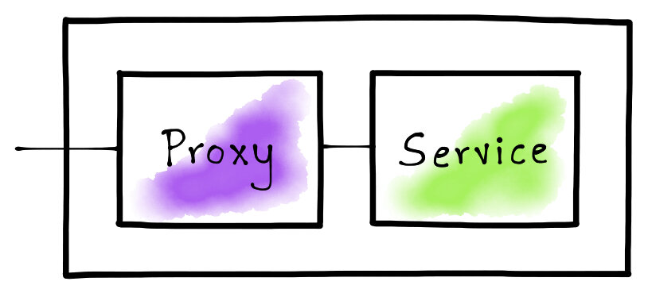
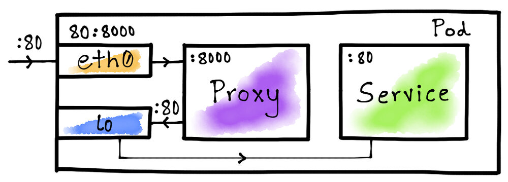

本文为翻译文章，点击查看原文。
Sidecar代理模式是一个重要的概念，它允许Istio为服务网格中运行的服务提供路由、度量、安全和其他功能。在这篇文章中，我将解释为Istio提供支持的关键技术，同时还将向您展示一种构建简单的HTTP流量嗅探sidecar代理的方法。
引言
服务网格的实现通常依赖于sidecar代理，这些代理使得服务网格能够控制、观察和加密保护应用程序。sidecar代理是反向代理，所有流量在到达目标服务之前流过它。代理将分析流经自己的流量并生成有用的统计信息，而且还能提供灵活的路由功能。此外，代理还可以使用mTLS来加密保护应用程序流量。

在这篇文章中，我们将构建一个简单的sidecar代理，它可以嗅探HTTP流量并生成统计信息，例如请求大小，响应状态等。然后，我们将在Kubernetes Pod中部署HTTP服务，配置sidecar代理，并检查生成的统计信息。
构建HTTP流量嗅探代理
Istio依靠Envoy来代理网络流量。Envoy代理被打包为一个容器，并部署在一个Pod中的服务容器旁边。在这篇文章中，我们将使用Golang来构建一个可以嗅探HTTP流量的微型代理。
我们的代理需要在TCP端口上侦听传入的HTTP请求，然后将它们转发到目标地址。因为在我们的例子中，代理和服务都驻留在同一个Pod中，所以目标主机可以通过环回IP地址（即，127.0.0.1）进行寻址。但是，我们仍然需要一个端口号来标识目标服务。
const (
proxyPort = 8000
servicePort = 80
)
现在，我们可以开始编写代理的骨架代码了。代理将侦听proxyPort上的请求并将请求转发给servicePort。代理将在服务每个请求后最终打印统计信息。
// Create a structure to define the proxy functionality.
type Proxy struct{}
func (p *Proxy) ServeHTTP(w http.ResponseWriter, req *http.Request) {
// Forward the HTTP request to the destination service.
res, duration, err := p.forwardRequest(req)
// Notify the client if there was an error while forwarding the request.
if err != nil {
http.Error(w, err.Error(), http.StatusBadGateway)
return
}
// If the request was forwarded successfully, write the response back to
// the client.
p.writeResponse(w, res)
// Print request and response statistics.
p.printStats(req, res, duration)
}
func main() {
// Listen on the predefined proxy port.
http.ListenAndServe(fmt.Sprintf(":%d", proxyPort), &Proxy{})
}
代理最重要的部分是它转发请求的能力。我们首先在代理实现中定义此功能。
func (p *Proxy) forwardRequest(req *http.Request) (*http.Response, time.Duration, error) {
// Prepare the destination endpoint to forward the request to.
proxyUrl := fmt.Sprintf("http://127.0.0.1:%d%s", servicePort, req.RequestURI)
// Print the original URL and the proxied request URL.
fmt.Printf("Original URL: http://%s:%d%s\n", req.Host, servicePort, req.RequestURI)
fmt.Printf("Proxy URL: %s\n", proxyUrl)
// Create an HTTP client and a proxy request based on the original request.
httpClient := http.Client{}
proxyReq, err := http.NewRequest(req.Method, proxyUrl, req.Body)
// Capture the duration while making a request to the destination service.
start := time.Now()
res, err := httpClient.Do(proxyReq)
duration := time.Since(start)
// Return the response, the request duration, and the error.
return res, duration, err
}
现在我们得到了代理请求的响应，让我们定义将其写回客户端的逻辑。
func (p *Proxy) writeResponse(w http.ResponseWriter, res *http.Response) {
// Copy all the header values from the response.
for name, values := range res.Header {
w.Header()[name] = values
}
// Set a special header to notify that the proxy actually serviced the request.
w.Header().Set("Server", "amazing-proxy")
// Set the status code returned by the destination service.
w.WriteHeader(res.StatusCode)
// Copy the contents from the response body.
io.Copy(w, res.Body)
// Finish the request.
res.Body.Close()
}
代理的最后一部分是打印统计信息。让我们继续将其实现。
func (p *Proxy) printStats(req *http.Request, res *http.Response, duration time.Duration) {
fmt.Printf("Request Duration: %v\n", duration)
fmt.Printf("Request Size: %d\n", req.ContentLength)
fmt.Printf("Response Size: %d\n", res.ContentLength)
fmt.Printf("Response Status: %d\n\n", res.StatusCode)
}
至此，我们已经构建了一个功能齐全的HTTP流量嗅探代理。
为代理构建容器镜像
Istio打包了Envoy并将其作为sidecar容器运行在服务容器旁边。让我们构建一个代理容器镜像，运行上面的Go代码来模仿Istio的运行模式。
# Use the Go v1.12 image for the base.
FROM golang:1.12
# Copy the proxy code to the container.
COPY main.go .
# Run the proxy on container startup.
ENTRYPOINT [ "go" ]
CMD [ "run", "main.go" ]
# Expose the proxy port.
EXPOSE 8000
要构建代理容器镜像，我们可以简单地执行以下Docker命令：
$ docker build -t venilnoronha/amazing-proxy:latest -f Dockerfile .
设置Pod网络
我们需要设置Pod网络以确保sidecar代理能够接收所有应用程序的流量，以便它可以对其进行分析并转发到所需的目标。实现此目的的一种方法是要求用户将所有客户端请求地址指向代理端口，同时将代理配置为指向目标服务端口。这使用户体验变得复杂。更好更透明的方法是使用Linux内核中的Netfilter/iptables组件。
Kubernetes 网络
为了更好地理解，让我们列出Kubernetes向Pod公开的网络接口。
$ kubectl run -i --rm --restart=Never busybox --image=busybox -- sh -c "ip addr"
1: lo: <LOOPBACK,UP,LOWER_UP> mtu 65536 qdisc noqueue qlen 1000
link/loopback 00:00:00:00:00:00 brd 00:00:00:00:00:00
inet 127.0.0.1/8 scope host lo
valid_lft forever preferred_lft forever
174: eth0@if175: <BROADCAST,MULTICAST,UP,LOWER_UP,M-DOWN> mtu 1500 qdisc noqueue
link/ether 02:42:ac:11:00:05 brd ff:ff:ff:ff:ff:ff
inet 172.17.0.5/16 brd 172.17.255.255 scope global eth0
valid_lft forever preferred_lft forever
如您所见，Pod可以访问至少2个网络接口，即lo和eth0。lo接口表示环回地址，eth0表示以太网。这里要注意的是这些是虚拟的而不是真正的接口。
使用iptables进行端口映射
iptables最简单的用途是将一个端口映射到另一个端口。我们可以利用它来透明地将流量路由到我们的代理。Istio正是基于这个确切的概念来建立它的Pod网络。

这里的想法是将eth0接口上的服务端口（80）映射到代理端口（8000）。这将确保每当容器尝试通过端口80访问服务时，来自容器外部的流量就会路由到代理。如上图所示，我们让lo接口将Pod内部流量直接路由到目标服务，即没有跳转到代理服务。
Init容器
Kubernetes允许在Pod运行普通容器之前运行init容器。Istio使用init容器来设置Pod网络，以便设置必要的iptables规则。这里，让我们做同样的事情来将Pod外部流量路由到代理。
#!/bin/bash
# Forward TCP traffic on port 80 to port 8000 on the eth0 interface.
iptables -t nat -A PREROUTING -p tcp -i eth0 --dport 80 -j REDIRECT --to-port 8000
# List all iptables rules.
iptables -t nat --list
我们现在可以使用此初始化脚本创建Docker容器镜像。
# Use the latest Ubuntu image for the base.
FROM ubuntu:latest
# Install the iptables command.
RUN apt-get update && \
apt-get install -y iptables
# Copy the initialization script into the container.
COPY init.sh /usr/local/bin/
# Mark the initialization script as executable.
RUN chmod +x /usr/local/bin/init.sh
# Start the initialization script on container startup.
ENTRYPOINT ["init.sh"]
要构建Docker镜像，只需执行以下命令：
$ docker build -t venilnoronha/init-networking:latest -f Dockerfile .
演示
我们已经构建了一个代理和一个init容器来建立Pod网络。现在是时候进行测试了。为此，我们将使用httpbin容器作为服务。
部署 Deployment
Istio自动注入init容器和代理。但是，对于我们的实验，可以手动制作Pod yaml。
apiVersion: v1
kind: Pod
metadata:
name: httpbin-pod
labels:
app: httpbin
spec:
initContainers:
- name: init-networking
image: venilnoronha/init-networking
securityContext:
capabilities:
add:
- NET_ADMIN
privileged: true
containers:
- name: service
image: kennethreitz/httpbin
ports:
- containerPort: 80
- name: proxy
image: venilnoronha/amazing-proxy
ports:
- containerPort: 8000
我们已经设置了具有root权限的init容器，并将proxy和service配置为普通容器。要在Kubernetes集群上部署它，我们可以执行以下命令：
$ kubectl apply -f httpbin.yaml
测试
为了测试部署，我们首先确定Pod的ClusterIP。为此，我们可以执行以下命令：
$ kubectl get pods -o wide
NAME READY STATUS RESTARTS AGE IP NODE
httpbin-pod 2/2 Running 0 21h 172.17.0.4 minikube
我们现在需要从Pod外部生成流量。为此，我将使用busybox容器通过curl发出HTTP请求。
首先，我们向httpbin服务发送一个GET请求。
$ kubectl run -i --rm --restart=Never busybox --image=odise/busybox-curl \
-- sh -c "curl -i 172.17.0.4:80/get?query=param"
HTTP/1.1 200 OK
Content-Length: 237
Content-Type: application/json
Server: amazing-proxy
然后，再发送一个POST请求。
$ kubectl run -i --rm --restart=Never busybox --image=odise/busybox-curl \
-- sh -c "curl -i -X POST -d 'body=parameters' 172.17.0.4:80/post"
HTTP/1.1 200 OK
Content-Length: 317
Content-Type: application/json
Server: amazing-proxy
最后，向/status端点发送一个GET请求。
$ kubectl run -i --rm --restart=Never busybox --image=odise/busybox-curl \
-- sh -c "curl -i http://172.17.0.4:80/status/429"
HTTP/1.1 429 Too Many Requests
Content-Length: 0
Content-Type: text/html; charset=utf-8
Server: amazing-proxy
请注意，我们将请求发送到端口80，即服务端口而不是代理端口。iptables规则确保首先将其路由到代理，然后将请求转发给服务。此外，我们还看到了额外的请求头Server: amazing-proxy，这个请求头是我们手动实现的的代理自动加上的。
代理统计
现在我们来看看代理生成的统计数据。为此，我们可以运行以下命令：
$ kubectl logs httpbin-pod --container="proxy"
Original URL: http://172.17.0.4:80/get?query=param
Proxy URL: http://127.0.0.1:80/get?query=param
Request Duration: 1.979348ms
Request Size: 0
Response Size: 237
Response Status: 200
Original URL: http://172.17.0.4:80/post
Proxy URL: http://127.0.0.1:80/post
Request Duration: 2.026861ms
Request Size: 15
Response Size: 317
Response Status: 200
Original URL: http://172.17.0.4:80/status/429
Proxy URL: http://127.0.0.1:80/status/429
Request Duration: 1.191793ms
Request Size: 0
Response Size: 0
Response Status: 429
如您所见，我们确实看到代理的结果与我们生成的请求相匹配。
结论
本文中，我们实现了一个简单的HTTP流量嗅探代理，使用init容器将其嵌入Kubernetes Pod与原有服务无缝连接。而且，我们也了解了iptables是如何提供灵活的网络，以便在处理代理时提供优良的用户体验的。最重要的是，我们已经学会了关于Istio实现的一些关键概念。